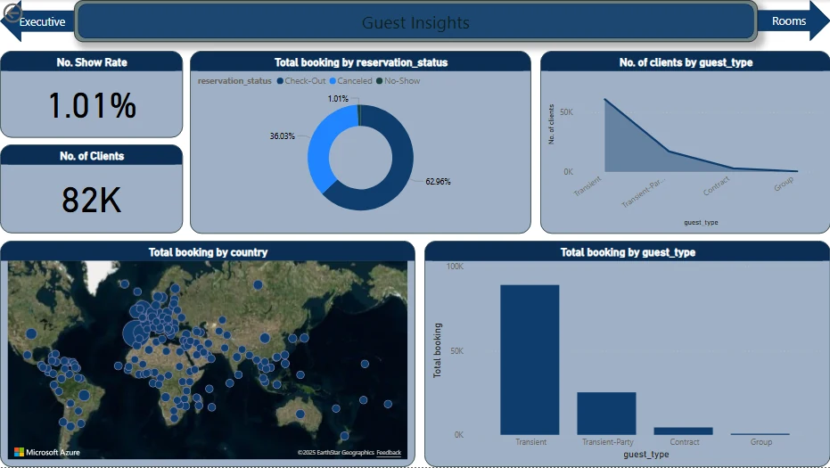
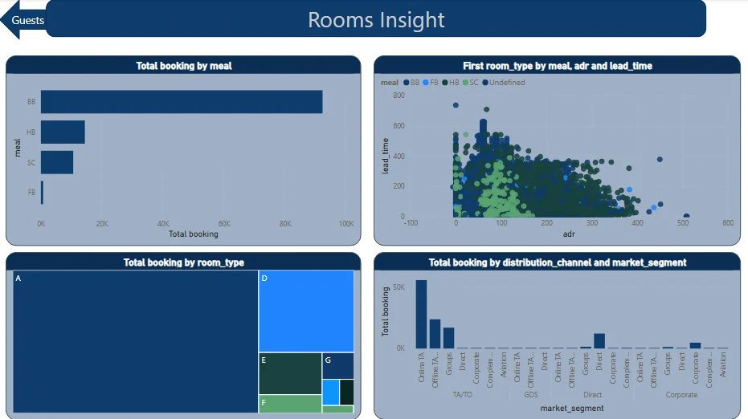

Hospitality / Business intelligence
Hotel Booking Analysis Dashboard
A three-page view of booking patterns, guests and room preferences. Built to make a dense hotel dataset easier to explore.

Portfolio / training project · Original project artifacts · Power BI
01 / BUSINESS CHALLENGE
The question behind the work.
Booking activity contains several connected questions: when reservations arrive, which bookings cancel, who the guests are, and what rooms or meals they choose. Looking at each question in isolation makes the overall picture harder to follow.
02 / DATASET & OBJECTIVES
Start with the context.
Portfolio analysis of hotel booking records. The retained screenshots show booking, cancellation, average daily rate, guest, country, room and meal fields. The source dataset and its license were not published with the portfolio.
Project objectives
- Bring booking indicators into an executive overview.
- Separate guest behavior from room and meal analysis.
- Make trends and comparisons readable through focused report pages.
03 / TECHNICAL APPROACH
How the pieces connect.
The visible report organizes information into an executive summary, a guest view, and a room/meal view. Cards, time-series charts, breakdowns and report filters provide different ways to examine the same booking context.
ARCHITECTURE / DATA MODEL
Three connected reporting views: executive summary → guests → rooms and meals. The underlying PBIX and semantic model were unavailable for inspection, so a star schema and individual DAX formulas are not asserted here.
Implementation
The existing Power BI recording demonstrates navigating report pages and inspecting chart details. Original screenshots are retained in full, rather than replaced with illustrative client results.
04 / VERIFIED OUTCOMES
What the work demonstrates.
The published artifacts demonstrate a multi-page Power BI report and its visual organization. They do not establish live refresh, business adoption, improved forecasting or a measured commercial result.
05 / SOURCE MATERIAL
Look closer.
The former public code link is unavailable. Explore the retained project artifacts below.
Technologies
06 / VISUAL RESULTS
The original artifacts.
Genuine project visuals, retained from the original portfolio. Open any image to inspect it in full.




LET’S MAKE IT CLEARER
Let’s make your data useful.
Tell me what you’re working with, and what you need to understand.